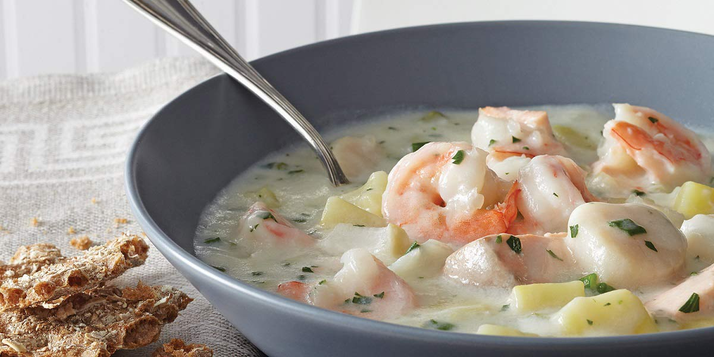

Seafood Chowder
Recipe Specification
Ingredients List
| Ingredients | Quantity |
|---|---|
| Maris Piper Potatoes | 1 kg |
| White Onion | 1x1 |
| Celery | 2 stalks |
| Leek | ½ stalk |
| Cod | 100g |
| Fish Stock | 1.7 litres |
| Spring Onion | 2 stalks |
| Cooked Prawns | 100g |
| Double Cream | 200ml |
| Vegetable Oil | 40ml |
| Fennel Seeds | 1 tsp |
| Salt & Pepper | To taste |
Yield: 8-10 portions
Preparation
- Peel and slice onion.
- Wash and slice celery stalks.
- Wash and slice leek.
- Peel and cut 800g of potatoes into equal sized pieces.
- Peel and cut 200g of potatoes into parmentier sized cubes.
- Cut Cod fillet into 1 inch cubes.
- Finely slice spring onion on the diagonal.
Cooking Instructions
- Place a large saucepan over a medium/high heat and add vegetable oil.
- Add onion, celery and leeks before stirring and cooking for 5 minutes.
- Once vegetables have softened, add potatoes and fennel seeds and cook for a further 3 minutes.
- Add fish stock to the pan ensuring that the potatoes is submerged. Add water if needed.
- Place a lid over the saucepan and bring to the boil before reducing heat to a simmer. Cook for 20-25 minutes.
- Place a frying pan on a medium/high heat, add vegetable oil and sauté the 200g of parmentier potatoes until evenly golden brown. Set aside for later.
- Once potatoes in saucepan are soft to the touch, place in a food processor or alternatively, use a stick blender and blend smooth.
- Pass soup through a chinois to strain out any big bits and return to the saucepan.
- Add Double Cream and bring to the boil before returning to the simmer.
- Season to taste before adding cod, prawn, spring onion and parmentier potatoes. Cook for 4 minutes before serving.

Serving Suggestions
It’s nice to Freshly bake a loaf of bread, hollow it out and serve the soup inside of it.
Storing instructions
Allow to cool to room temperature before placing in an airtight container and placing in the fridge. Consume within 4 days of making it.
Reheating Instructions
Gently bring back up to temperature in saucepan on stove. Alternatively, warm in microwave for 3 minutes, stirring every 1 minute to ensure even warming.